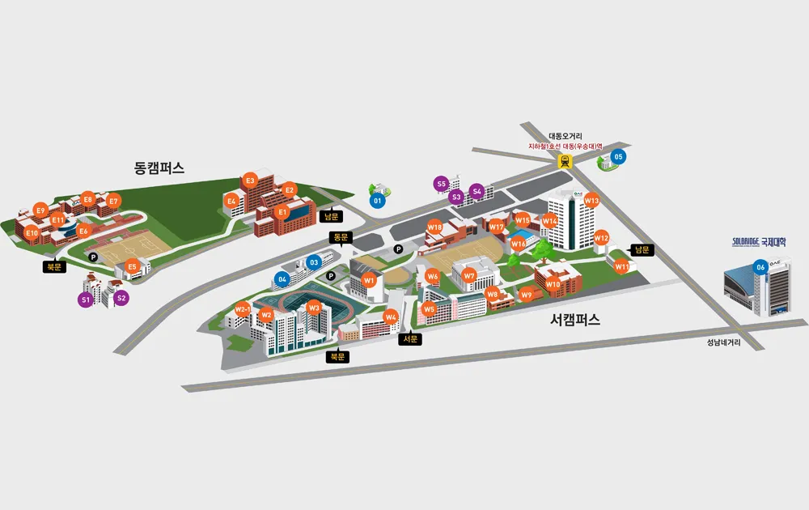

Hypertext Markup Language (HTML) is the standard markup language for creating web pages and web applications.Web browsers receive HTML documents from a web server or from local storage and render them into multimedia web pages. HTML describes the structure of a web page semantically and originally included cues for the appearance of the document. 
1963년 학교법인 동아학원[7] 우송정보대학과 우송공업대학, 1995년 중경산업대학교로 개교한 것을 시작으로 1996년에 우송산업대학교로 교명을 변경하고, 1999년에 다시 우송대학교로 교명을 변경했다. 설립 당시 4년제 산업대학으로 인가받았기 때문에 2008년까지는 수능 가, 나, 다군 외에 산업대학교 전형으로 지원할 수 있는 대학이었다. 이후 2008년에 우송공업대학과의 통합으로 4년제 종합대학교로 전환하면서 오늘에 이르고 있다.